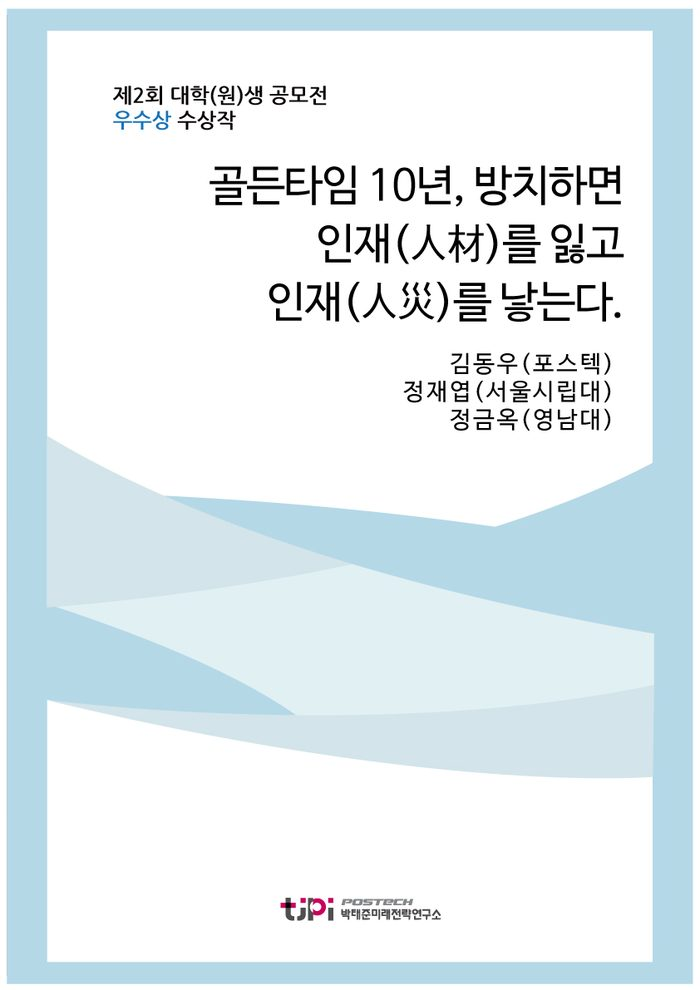

저자 김동우(포스텍), 정재엽(서울시립대), 정금옥(영남대)연재일 2015-09-01

요 약
2015 대학(원)생 에세이 공모전 우수작
' 골든타임 10년, 방치하면 인재(人材)를 잃고 인재(人災)를 낳는다. '
- 포스텍 김동우, 서울시립대학교 정재엽, 영남대학교 정금옥
본 에세이는 10년 내에 한국사회가 당면할 가장 중요한 이슈는 '인성의 부재'이며 과학이 나날이 발전하는 IOT시대에 이는 더 큰 사회문제를 가져올 것이라 예측하고 있다. 이에 대한 근거로 현 사회에 '인성의 부재'로 일어나고 있는 현상들과 인성의 중요성 및 해결방안을 제시하고 있다.
------------------------------------------
박태준미래전략연구소에서는 전국 대학(원)생을 대상으로
「10년 내에
한국사회가 당면할
가장 중요한 이슈는?」
라는 주제로 공모전을 개최하였다.
국내 53개 대학을 비롯해 튀니지대학(튀니지), 튈버그대학(네덜란드), 하노이국립대(베트남) 등 해외대학에 유학하는 학생 등 57개 대학 138개팀 179명이 응모해 높은 호응도를 보였으며, 이중 대상 2편, 우수상 10편을 선정하였다.
목 차
○ 프롤로그_ 2023년 4월의 어느 날
제 1장_ 인성의 부재가 심각해지는 원인은 무엇인가
제 2장_ 향후 10년, 인성의 부재가 왜‘ 가장’ 중요한 이슈가 되는가
√ 제 4의 물결은 파도를 일으킬 뿐, 파도 밑의 사정은 따로
있다
√ IOT시대가 오기 때문에, 인성의 부재는 더 큰 사회
문제를 가져 온다
√ 우리나라의 유일한 자원은‘ 인재’이기에, 인성의
부재는 더 심각한 문제
제 3장_ 인성의 부재, 그 대처 방안은 무엇인가
√ 바꿀 수 없는 것은 과감히 내려놓고, 변화시킬 수 있는
것에 집중하라
－ 뇌 공학의 발전, 교육에 접목시켜 이용하라
－ 교육계는 성장 마인드를 가지고 수용•발전해야 한다
－ 인문학의 숲에서 자신과 타인, 우리를 만나다
제 4장_“ 이 문제는 해결 가능한 문제입니다!” 외친 스무 살 청년처럼
내 용
[2015 청년 에세이 우수작] 골든타임 10년, 방치하면 인재(人材)를 잃고 인재(人災)를 낳는다.
김동우(포스텍), 정재엽(서울시립대), 정금옥(영남대)
프롤로그
2023
월의 어느 날
30
후반 여성이 전국에 몇 군데 남아있지 않은
, K
문고를 방문한다
그녀는
3D
프린터 업계 홍보마케팅을 담당하는 잘 나가는 커리어우먼으로
혼기가
찼으나 결혼의 필요성을 느끼지 못해 싱글의 생활을 즐기고 있다
요즘은 책을 다 온라인으로 사다 보니 오프라인 서점을 찾기가 쉽지 않지만
여전히 아날로그 감성을 그리워하는 그녀는 주말마다 시간을 내어
문고를
방문한다
. K
문고를 들어간 그녀는
10
년 전 자신의 모습을
떠올려본다
대형서점에 가서 베스트셀러 코너 및 신간도서 코너를 돌아다니며 어떤 책을 살까 고민하던
자신의 모습
…….
그러나 그런 생각을 하는 것도 잠시
웨어러블
(wearable)
기기는 그녀의 데이터를 분석해서 추천 책 목록을 보여준다
그녀는
고민의 여지없이 책을 선택하고
그와 동시에 드론이 책을 찾아서 가져다 준다
드론에 장착된 결제기에 카드로 결제를 하고 나서 그녀는
문고를
유유히 빠져나간다
원하는 책을 사고 결제하고 서점을 나오기까지 걸린 시간은 단
10
편리하고 좋으면서도 왠지 모를 아쉬움에 서점을 뒤돌아보는 그녀의 손에는 「인성이란 무엇인가」
「취업난
, 1
인 기업으로 극복하기」
IOT
시대의 모순」 이라는 책
권이 쥐어져 있었다
위의 이야기는
10
년 내 가상의 어느 날의 사회상을 담아
미래를 그린 것이다
먼저
혼기가 찼음에도 결혼을 하지
않는 커리어 우먼은 여성의 사회진출과 결혼율이 감소하는 우리 사회의 모습이다
다음으로
전국에 몇 개 없는 오프라인 서점은 과학기술의 발달로 인한 오프라인 매장의 소멸과 온라인의 지배를 상징하고
있다
또한
웨어러블 기기를 통한 책 구매는 스마트폰 시대를
넘어서 곧 도래할 사물인터넷 시대의 생활 모습을 보여주고 있다
책을 배달해주는 드론 또한 앞으로 무궁무진한
잠재력을 가지고 있는 존재로서 그 모습의 일부를 보여주고 있다
마지막으로
그녀가 산 책
권 「인성이란 무엇인가」
「취업난
, 1
인 기업으로 극복하기」
IOT
시대의 모순」은
10
내에 가장 중요한 이슈가 될
인성의 부재
라는 문제와 이와
관련 있는
10
년 내의 사회 문제들을 담고 있는 것이다
위의 책들 중에서도 「인성이란 무엇인가」라는 책의 제목을 주목할 필요가 있다
이 책의 제목을 선택한 데에는 이유가 있는데
바로 책이야말로 사회상을
잘 반영하는 하나의 매체이기 때문이다
그 대표적인 예로는 하버드대 교수 마이클 센델의 「정의란 무엇인가」와
서울대 김난도 교수의 「아프니까 청춘이다」를 꼽을 수 있다
두 책 모두 엄청난 주목을 받았으며 그
공통점은 바로 사회의 현실을 잘 담고 있다는 점이다
전자의 책은 예전에 비해 부정의가 넘쳐나는 현대
사회 모습을 잘 담고 있고
후자의 책은
포 세대
연애
결혼
출산
-3
가지를 포기하며 살아가는 세대
라는 용어를 낳을 만큼 살아가기 힘든
사회 현실을 담고 있다
이와 마찬가지로
가상 시나리오에서의
「인성이란 무엇인가」라는 책 또한
2023
년 즈음
그 사회의
모습을 오롯이 담아내는 책이 될 것이다
이 책의 제목은
향후
10
년 내에 가장 이슈가 될 것이 바로
인성의 부재
가 될 것임을 시사하고 있다
인성의
부재가 심각해지는 원인은 무엇인가
서론에서 「인성이란 무엇인가」라는 책이
10
년 내 어느
날의 모습을 잘 담은 책이 될 것이라고 하였다
이는 인성의 부재가 현 사회의 흐름에 따른 불가피한
현상이기 때문이다
그렇다면 인성의 부재가 향후
10
년 내에
그토록 심각해지는 이유는 무엇일까
그 원인은 현재 우리 사회의 문제 속에서 찾을 수 있다
인성부재의 첫 번째 원인은 결혼율이 급격히 감소하고 이혼율은 증가하며
맞벌이 부부가 더욱 늘어나면서 부실해지는 가정교육이다
여성의 사회적
지위가 높아지면서 더 이상 결혼은 필수가 아니라 선택이 되었다
결혼에 대한 달라진 사고방식을 가진
20
대들
그들이 몇 년 후 결혼할 시기가 되었을 때의
결혼율은 상당히 낮을 것이다
결혼율 뿐 만 아니라 출산율도 낮아질 전망인데
한 취업 포털이
20
대 이상 여성
1203
명을 대상으로 출산의식을 조사한 결과
미혼 여성들을 중심으로 출산기피 경향이 매우
높았던 것에서 이를 충분히 예측할 수 있다
또한 결혼을 하더라도 요즘은 자녀를
명 이상 낳지 않으려 할 뿐만 아니라 자녀가 없는 부부인 딩크족
(DINK:
Double Income, No Kids)
도 늘어나는 추세이기 때문에 우리나라의 출산율은 급격히 감소할 것이다
이렇게 출산율이 낮아지다 보면 대부분은 한 자녀 가정이 될 것이다
외동의 자녀는 가정과 사회에서 귀하게 여겨지며 자랄 것이고 형제
자매와 부대끼며 자랄 때보다
배려
공감
양보 등의 인성적 요소를 체득하기 힘든 환경
속에서 살아가게 될 것이다
더불어
여성의 사회진출로 인해
맞벌이 부부가 늘어나다 보면 부모가 가정에 소홀해지고 인성교육의 핵심인 가정교육이 부실해질 확률이 높다
그런 것은 아니지만
같은 시간이 주어졌을 때 평균적으로 맞벌이 부부의 자녀들이 그렇지 않은 자녀들보다
부모와 대화하는 시간이 적을 수밖에 없다
부모와의 대화를 많이 할수록 인성이 올바를 확률이 높다는
여러 연구 결과들을 토대로
앞으로 가정이 붕괴되고 가정교육이 소홀히 되는 추세는 우리 사회에 인성이
부재하는데 큰 영향을 끼칠 것이다
위에서 살펴본 것처럼
출산기피 경향이 심해지면서 한 자녀만
낳는 가정이 많고 핵가족화로 인해 조부모님과의 접촉도 뜸한 지금
부모와의 대화는 더 부족해지고 인터넷
기기와 소통하는 시간만 늘어난다면
게다가 이혼율까지 높아진다면
이런
시대에 우리 아이들이 올바른 인성교육을 받기란 쉽지 않아 보인다
결국
올바른 인성교육을 못 받는 현 세대의 어린 아이들에게
그리고 그것을
대수롭지 않게 여기는 부모가 되어버릴 현
20
대들에게
인성의
부재
라는 문제가 심각해질 것이라는 예측은 너무나 당연해 보인다
인성부재의 두 번째 원인은
고령화로 인해 공교육 예산을
확보하기 어려워지면서 인성교육의 장인 학교가 사라지기 때문이다
공교육의 장인 학교는 학생들이 본격적으로
사회에 나가기 전에 겪는 하나의 작은 사회로서 인성교육의 장이기도 하다
중등학교는 공부의 목적 외에도 다양한 경험들을 접해보고 친구들과
상호작용하는 공간이다
이 곳에서의 다양한 경험들이 모여서 인성의 틀이 마련되고 동료 학습자들과의 상호작용은
그 틀을 더 견고하게 한다
이렇게 인성의 틀을 마련하고 더욱 단단히 하는 장소인
학교
를 유지 및 지탱하는 것이 바로 공교육인 것이다
그러나 뉴스 및 신문기사에서도 볼 수 있듯이 현재 공교육의 힘은 점점 약해지고 있고
의료기술의 발달로 고령화가 심각해지는 앞으로의 공교육은 그 힘이 더 약해질 수밖에 없다
그 이유는 정부가 고령화를 대비하여 의료 및 사회보장제도를 마련하기 위한 비용을 확보해야 하기 때문이다
의료비용 및 사회보장제도를 위한 복지 예산이 증가하면 그만큼 공교육에의 예산이 줄어들게 되는데
지금도 부족한 예산이 더 줄어든다면 앞으로 초
중등 공교육 지원
시스템을 그대로 유지하기란 쉽지 않을 것이다
고령화 시대
…….
복지 예산을 삭감할 수는 없는 정부로서는
이에 대한 대비책으로
가지를 선택할 수 있을 것이다
첫째
한 때 이슈가 되었던 철도 민영화와 같이 공교육을 민영화 하는 것
둘째
아이비리그 대학 등 일부 국가에서 실시하고 있는
개방형 온라인
교육
을 수용
확대하는 것
곧 도래할 사물인터넷
(IOT)
시대의 흐름을 반영한다면
정부는
후자의
개방형 온라인 교육
을 선택할 확률이 높다
학부모와 학생의 입장에서도 이 선택을 지지할 확률이 높은데
우수한
수업과 강의를 손쉽고 저렴하게 들을 수 있기 때문이다
특히
10
내에 반드시 찾아올
IOT
시대에 온라인 교육은 오프라인 교육과 비교할 수 없는 힘을 발휘할 수 있다
그 이유는 미래학의 아버지라 불리는 토마스 프레이 박사의 인터뷰
-2020
년에
우리는 모든 곳에서 정보를 얻고
500
억 개가 넘는
IOT
장치를
사용하고 있을 것이고
, 2024
년경에는 전 세계에
조개의
센서가 설치되어 있을 것
에서 추론할 수 있다
개방형 온라인 교육은 각종 기기의 센서를 이용하여 학습자의 교육 데이터를 수집할 것이고
이 교육 데이터를 기반으로 학생 맞춤형 교육을 실시할 수 있기 때문에 학생 및 학부모의 선호도가 높아질 수밖에
없다
이러한 교육계의 흐름은 홈스쿨링을 본격화 시킬 것이고
그로
인해 공교육의 장인 학교는
10
년 내에 급속도로 줄어들어 서서히 사라지게 될 것이다
그 결과
아이들은 학교에서 동료 학습자들과 상호작용하며 배울 수
있는 공감
소통
양보
배려
이해 등의 인성적 요소를 자연스럽게 체득할 기회를 잃어버리게 될 것이다
더 큰 문제는 초
중등교육에서 끝나지 않을 것이라는 점이다
지금도 교육 분야의 예산이 부족해 골머리를 앓고 있는 정부는
대학교육에도
서서히 개방형 온라인 교육을 취하게 될 확률이 높다
대학
그곳은
더 다양한 사람을 만나고 사회생활에 적응하는 방법을 배워나가야 하는 곳이다
그런데
칸 아카데미 사이드
’, ‘edX’, ‘
무크
와 같은 형태의 개방형 온라인 교육 시장이 활성화되면 현장 강의 속에서 옆 동료들과 소통하며 수업을 듣는 모습은
서서히 사라지게 된다
그러다 결국
우리는 지금보다 훨씬
개인주의적인 대학생 및 사회인의 모습을 보게 될 것이다
대학은 단순히 지식을 습득하는 장소를 넘어서 리더의 자질을 기르는 곳이라는 점을 기억해야 한다
따라서 사회성
협력
공동체
의식 등의 인성적 요소는 소홀히 치부하고 지식적인 요소만 중요시하면서 서서히 변해가는 위와 같은 교육계의 흐름은 비판적인 눈으로 바라볼 필요가
있다
인성부재의 세 번째 원인은 취업난으로 인해
인 기업 창업
시대가 활성화되면서 심해지는 개인주의이다
유엔미래보고서에 따르면 현재도 심각한 취업난에 엎친 데 덮친
격으로
2030
년이 되면 현존 일자리의 무려
80%
가 소멸
변환될 것이라고 한다
서론의 가상 시나리오에서 드론이 책을 배달해준
것처럼
드론과 같은 로봇이 앞으로 사람들의 영역을 침범할 것이라는 예측은 부정할 수 없다
최근 주가를 올리고 있는
3D
프린터의 사례만 보아도
한 때 사람이 담당했던 제조업 영역을 차지하면서 사람이 설 자리가 매우 줄고 있음을 확인할 수 있다
앞으로는 드론
, 3D
프린터 및 각종 로봇들이 그 영역을 더욱 넓히면서
사람들이 설 자리를 차지하여 취업난은 더욱 심각해질 것이다
취업난 속에서 살아남기 위한 방법으로
대니얼 핑크는
인 기업 창업 시대가 열릴 것이라고 언급했다
. 1
인 기업 창업이란
자신만의 기술로 하나의 프로젝트를 부여 받고 이를 수행한 후에 그에 해당하는 보수를 받는 형태의 일자리를 의미하는데
, 1
인 기업으로 성공한 대표적인 사례로 마크 주커버그와 빌 게이츠가 있다
이러한
인 기업은 앞으로 더욱 활성화 될 것으로 예상되는데
, IOT
시대에는
모든 기기가 초 연결되기 때문에 혼자 일해도 충분히 성과를 낼 수 있는 사업적인 환경이 마련되기 때문이다
특히
간섭 받기를 싫어하고 스마트폰 만으로도 혼자 시간을 잘 보내는 오늘날의 젊은이들에게
인 기업 창업은 매우 매력적으로 느껴질 것이다
그 이유는
인 기업은 기존의 기업과 달리 위계질서가 없고 회사 내 적응도 필요 없으며 무엇보다 자신의 기술로 쉽게 취업을
할 수 있다는 큰 장점이 있기 때문이다
이처럼
, 1
인 기업 창업은 젊은이들이 취업난을 극복할 수
있는 대안이 될 수 있음에는 틀림이 없다
그러나
인 기업
창업은 협력과 팀워크를 그다지 필요로 하지 않는다는 장점이자 단점이 있다
혹자는
인 기업 간 협력이 종종 필요하다며 반박하기도 한다
그러나 문제는
이것이
일시성을 가진 협력
이라는 데 있다
일시적인 협력은 프로젝트가 완성되면 끝나버리는
이해관계에 의한
단기적인 협력이다
이러한 환경 속에서 사람들의 개인주의 성향은 더욱 강해지고 공동체 의식 및 협동심은
약화될 확률이 높다
이러한 현상이 축적되다 보면
소위 인생의
막이라고 불리는 사회생활을 통해 인성을 견고히 다지고 상호소통 및 이해심을 배울 기회는 사라지고 말 것이다
이것이
인성의 부재가 더욱 심각해지게 되는 마지막 원인이다
글 서두에서
「인성이란 무엇인가」라는 책이
2023
년 즈음에 발행되어 한국인들의 주목을 받을 책이 될 것이라는 추측을 하였다
가상 시나리오이긴 하지만
이는 결코 단순한 추측에 지나는 것이
아니라는 것을 명심해야 한다
앞서 말한 현 사회의 문제들
결혼율
감소
이혼율 및 맞벌이 부부의 증가
심각한 고령화 그리고
취업난 속
인 기업 창업 시대의 도래
미래의 주역인 지금 세대와 자라나는 세대의 인성 부재가 심각해질 것
이라는
단순한 추측을 자명한 사실로 만들어 주고 있다
향후
10
인성의 부재가 왜
가장
중요한 이슈가 되는가
의 물결은 파도를 일으킬 뿐
파도 밑의 사정은 따로 있다
향후
10
우리
사회는 사물인터넷
(IOT)
시대로 접어들 것이다
이는 여러
전문가들에 의해서 사실
(fact)
로 인정받고 있다
저명한
미래학자 엘빈 토플러는
의 물결은 농업혁명이었고 제
의 물결은 산업혁명이었으며 현재 제
의 물결은 정보화 혁명이고
다음에 밀려올 제
의 물결은 사물인터넷 혁명이다
.’
라고 언급했고
미래 경제학자 제레미 리프킨도 제
의 물결로서 초 연결 경제 혁명을 언급했다
미국의 네트워크 산업에서
각광받는 기업인
CISCO
또한 사물인터넷 시대가 올 것임을 확신했다
CISCO
에 따르면
2020
년에는 무려
370
개의 기기가 인터넷상에 연결될 전망이라고 한다
이를 토대로
향후
10
년 내에
IOT
시대가 올 것임을 알 수 있다
그렇다면
, 10
년 내 우리 사회가 당면할 가장 중요한 이슈는
IOT
일까
이 질문에 대해서는 다시 한 번 생각해볼 필요가 있는데
의 물결이었던 정보화 시대를 돌이켜보면 그 이유를 알 수 있다
. 21
세기 정보화시대를 돌아보면
우리 사회가 당면한 가장 중요한
이슈는
TV,
스마트폰
인터넷 등의 정보화 매체이라기보다는
그 정보화 매체들로 인해 사회에 큰 혼란을 주는 문제들인 경우가 많았다
그 사회를 들썩이게 하는 중요 이슈는 그 시대의 물결을 일으킨 것
자체
라기보다는 그것으로 인해 나타난
부정적 결과
즉 그 이면인 것이다
과학기술이 발전하면 늘 그 뒤의 어두운 면
때문에 논란이 되는 것처럼 말이다
따라서
이 글은
IOT
시대가
곧 도래한다는 점과 그 영향력을 인정함에도 불구하고
10
년 내에 우리 사회가 당면할 가장 중요한 이슈로서
의 물결인
IOT
그 자체를 들지 않는다
오히려
초 연결 기술로 인해 생겨날 여러 문제들에 초점을 맞추고
있다
IOT
시대가 오기 때문에
인성의 부재는 더 큰 사회 문제를
가져 온다
최근 엄청난 흥행을 가져온 어벤져스에는 인공지능
울트론
이 등장한다
그러나 지구의 평화를 위해 탄생한 울트론은 인류를 멸망시키려
하는 최대의 적이 된다
그 이유는 무엇이었을까
바로
인공지능 울트론을 만든 토니 스타크의 바르지 못한 생각이 울트론에게 영향을 주었기 때문이다
이처럼
기술이 아무리 뛰어나다 하더라도 그 기술을 이용하는 주체인
사람의 생각이 그릇되면 그 기술은 절대 올바르게 사용될 수 없다
여기서
우리는 왜
인성의 부재
10
년 내 가장 중요한 이슈가 되는지를 짐작할 수 있다
. IOT
라는
기술이 등장하면 그 기술 자체는 우리의 삶에 자연스럽게 녹아들 것이다
그러나 문제는 그 기술을 악용해서
개인 데이터를 집단 노출시키는 등 고도의 지능형 범죄가 큰 사회문제로 대두될 수 있다는 점이다
지금의
지능형 범죄와는 그 규모와 피해가 다를 것인데
, IOT
시대는 개인 데이터를 기반으로 해서 사물 간에
초 연결 되어있다는 특성이 있기 때문이다
이는 한 국가가 흔들릴 수 있을 만큼 큰 규모의 피해를 낳을
수 있기 때문에 각 국가는 보안 네트워크 망을 구축하는데 힘을 쓸 것이다
하지만 그 또한 사람이 만드는
기술이어서
이 보안을 뚫으려는 또 다른 기술이 다시 개발될 것이다
결국
사람들의 삶을 편리하게 하기 위해서 개발된
IOT
기술이
또 다른 사람에 의하여 사람들의 삶을 더 불편하게 하는
악순환이 지속되는 것이다
과학기술이 나날이 발전하는
IOT
시대에 이 악순환의 고리를
근본적으로 끊을 수 있는 방법은 하나 뿐 이다
바로
올바른
판단력과 의사결정능력 그리고 양심을 가지도록 하는 것
올바른 판단력
의사결정능력
양심은 인성에서부터 비롯되고
인성이
부재하는
IOT
시대에 우리는 결코 밝은 미래를 기대하기 힘들다
이것이
IOT
시대일수록 인성의 부재가 더 심각한 문제가 될 것인지
이유에 대한 답이다
우리나라의 유일한 자원은
인재
이기에
인성의 부재는 더 심각한 문제
‘한국의 저 출산
고령화 문제는 날로 심각해져서 한국의
발목을 잡을 것이다
.’
미래학의 아버지 토머스 프레이가 얼마 전 인터뷰 한 내용이다
이에 덧붙여
한국의 저출산
고령화
문제는 현재 한국의 재능과 기지로는 극복하기 힘든 문제라며 그 심각성을 언급하기도 했다
그렇다면
타 국가들에 비해 한국에서 저출산
고령화 문제가 더 심각하게 조명되는
이유는 무엇일까
바로
우리나라가 경쟁력을 가질 수 있는
자원은
인재
이기 때문이다
「앞으로
10
한국
없는 중국은 있어도 중국 없는 한국은 없다」등 다수의 책에서도 천연 자원은 부족하고 땅은 좁으며 인구는 많지 않은 우리나라가
10
년 후 중국과 함께 하려면 인재 자원을 성장 동력으로 삼아야 함을 강조하고 있다
이를 토대로
우리나라에서 미래 성장 동력 자원이 인재이며
이들을 양성하는 것이 얼마나 중요한지를 다시 한 번 깨달을 수 있다
그렇다면
우리나라 자원이 인재이기 때문에 인성 부재가
더욱 심각한 문제라는 것은 무슨 의미일까
우선
우리나라
인재 개념을 살펴보면 그 의미를 알 수 있다
흔히
인재
하면 유
소년층의
미래의
주역이 될 자라나는 세대들을 떠올린다
하지만 좀 더 넓게 생각하면 중
노년층도 놓쳐서는 안 될 우리나라의 중요한 인재이다
특히
저출산
고령화가
심각해지는 우리나라는 유
소년층은 줄고 중
노년층은 크게 늘어나는 상황을 당면하게 될 텐데
이에 대해 걱정만
할 것이 아니라 두 층의 인재를 잘 활용하려는 발상의 전환이 필요하다
두 층의 인재를 잘 이용하여 사회 발전에 이바지 하도록 하기 위해서
줄어드는
소년층의 인재들은 가능한 놓치지 않도록 하면서도 그들이 중
노년층의 인재들과 잘 협력하여 시너지 효과를 내도록 해야 하는 것이다
때 필요한 것이 바로
인성
인데
만약 사회에 인성이 부재하게 된다면 두 층의 인재 간에 세대 차이 및 사고방식 차이로 인한 충돌이 발생하게
될 것이다
이는
인재가 미래 성장 동력자원인 우리나라에
엄청난 손실이다
다음으로는
한국의 한 천재 이야기를 통해 인재가 자원인
우리나라에서 인성의 부재가 큰 문제라는 의미를 더 잘 이해할 수 있다
. 5
살 때 미적분을 풀고
살 때 대학생들과 수업을 같이 들었으며
11
세에 미 항공우주국
(NASA)
에 들어갔던
, IQ 210
의 한국 천재를 기억하는 사람이
있을지 모르겠다
천재소년이었던 그는 현재 한국에서 두 아이의 아빠이자 교수로서
과거의 화려한 경력에 비해 너무나 평범한 삶을 살고 있다
물론
그는 지금이 더욱 행복하다고 하지만
우리나라는 엄청난 인재를 놓친 셈이기에 안타까울 수밖에 없다
그의 인터뷰에 따르면
지적인 영역만 추구한 그는 제 나이에 느끼고
행할 수 있는 것들을 누리지 못했으며
그 결과 사회성이 떨어져 사회의 일원으로 적응하기가 힘들었다고
한다
인성이 뒷받침되지 않은 인재는 그 시작은 뛰어났을지
모르지만 끝에는 진정한 인재가 되기 힘든 것이다
이에 대해 동국대학교 석좌교수이자 교육계 혁명가인
조벽 교수는
인재의 핵심요소인 창의력은 긍정심
모험심
그리고 여유가 있어야만 가능한 것
이라 주장하면서 인성의 중요성을 언급했다
특히
최근 트렌드인 창조경제시대에는 창의력이 경쟁력이다
인성이 기반이 되어야 진정한 창의력을 발휘할 수 있다는 점에서 인성의 중요성은 더욱 강조될 것이다
마지막으로
인성이 중요한 가장 중요한 이유 중 하나는 바로
국가에 진정으로 기여할 인재란 그 마음가짐이 단순히
나의 성공
이 아니라
우리의 성공
될 수 있어야 하기 때문이 아닐까
결국
인재를 미래 성장 동력으로 삼아야 하는 우리나라는
그 어떤 측면보다 인재들의 인성이 부재하지 않도록 힘써야 한다
저출산으로 인해 줄어드는 유
소년층을 단 한 명도 소홀히 하지 않고 인재로 키워내기 위해서
그리고
이들이 고령화로 인해 늘어나는 중
노년층 인재와 발을
맞춰가며 시너지 효과를 내기 위해서
마지막으로
국가에
기여할 창의적인 인재로 길러내기 위해서
인성
은 무엇보다
우선되어야 한다
인성의
부재
그 대처방안은 무엇인가
지금까지 우리는 현대 사회의 문제 속에서 인성이 부재할 수밖에 없는 원인을 살펴보고
, 10
년 내 한국 사회가 당면할 가장 중요한 이슈가 다른 것이 아닌
인성의 부재일지에 대한 이유를 알아보았다
그 결과
현재
한국의 사회문제와 미래에 도래할 한국의 모습 모두가 하나의 공통 주제로 수렴됨을 알 수 있었다
저출산
고령화
취업난
등 여러 현대사회 문제의 화살촉이 공통적으로
인성의 부재
라는
과녁을 향하고 있었고
, IOT
시대 및 인재 자원 등 향후 미래의 전망 또한 같은 곳을 가리키고 있었다
이를 시각화하면 다음과 같다
그림
1.
인성 부재와 사회 문제들과의 관계
바꿀 수 없는 것은 과감히 내려놓고
변화시킬 수 있는
것에 집중하라
그림
1.>
을 보면 사회의 과학
기술
발전으로부터 시작해 화살표
(A, B, C, D)
가 있고
그 결과 우리의 삶을 불편하게 하는 사회문제들로 귀결됨을 알 수 있다
우리는
개의 화살표 중에 하나의 고리를 끊어야만 사회문제의 발생과 심화를 막을 수 있다
당신이라면 어떤 화살표를 선택하겠는가
우선
, A
는 사회의 과학
기술 발전을 촉진시키는 외부의 것들로서 우리가 쉽게 끊을 수 없는 고리이다
우리가 스마트폰의 밀려듦을 막을 수 있었는지 생각해보면 왜
끊는 것이 불가능한지 이해할 수 있을 것이다
그렇다면
화살표
는 어떨까
단순히 생각하면
고리를 끊는 것이 가장 효과적으로 보인다
그러나 미래학자 토머스 프레이가 언급했듯이
가정의 붕괴를 막고 고령화를 방지하며 취업난을 극복하는 것은 현재 한국의 재능과 기지만으로는 단기간에 해내기
쉽지 않은 것이다
위의 문제들은 단기간 뿌리 뽑기 힘든
현대
세대들의
사고방식
과 관련되어있기 때문이다
. B
에서도 특히
IOT
시대가 도래하는 것을 막는 것은 제
의 물결을 막는 것과 같기 때문에 이것은 거의 불가능하다고 할 수 있다
그렇다면
우리가 집중해야 할 화살표는 무엇일까
바로
화살표
이다
인성의
부재로 향하는 화살표
는 다른 화살표보다 비교적 쉽게 끊을 수 있다
이를 끊기 위한 가장 현실적이고도 효과적인 키
(KEY)-
그것은 바로
교육
이다
교육의 예로서
는 다음과 같은 것들을 생각해 볼 수 있다
뇌 공학의 발전
교육에 접목시켜 이용하라
천재 우주물리학자 스티븐 호킹은
100
년 내에 로봇이 사람을
지배할 것이라고 예견했다
뇌 공학이 급속도로 발달하면서
인공지능을 지닌 로봇이 사람을 능가 및 지배한다는 것이다
. 100
년까지 가지 않더라도 머지않아 뇌 공학이
크게 발전하리라는 것을 알 수 있는데
유명한 발명가이자 미래학자인 커즈와일에 따르면
2029
년에 컴퓨터가 인간의 지능을 능가할 뿐 아니라 가까운 미래에는 자신의 뇌를 컴퓨터에 업로드
(upload)
하는 시대가 올 것이라고 한다
이처럼 미래 유망 키워드
중 하나이며 새로운 패러다임을 가져올 뇌 공학을 활용하여
뇌의 특성을 파악하고 이를 교육과 접목시킨다면
인성 부재를 막는 하나의 방법으로 사용할 수 있을 것이다
예를 들어
, 0-12
살 까지 뇌의 거의 대부분이 형성되며
이때 교육받은 것은 쉽게 바꾸기가 어렵다는 뇌의 특성을 토대로 초등교육에서 커리큘럼에 변화를 주는 방법이 있다
이는 우리나라 뇌 과학 전공 김대식 교수가 한 인터뷰에서 언급한 것으로서 뇌의 유연성이 높은 시기에는 수학
물리 등 불변의 진리를 가르치고 이후에 역사
사회
윤리 등의 개념을 가르치는 것이다
이렇게 하면 인성과 관련된 신념이나
성향이 잘못 주입되는 것을 막을 수 있다
또 다른 방법으로
17-19
세 까지 성격
독립성
사회성을 주관하는
전두엽이 발달된다는 특성을 반영하여 동료관계 관리 프로그램을 실시하는 방법이 있다
이와 함께 올바른
가치관을 정립할 수 있도록 상담 프로그램을 지금보다 더 내실 있게 실시하면 효과는 배가 될 것이다
마지막으로
일반 동물과 달리 뇌가 형성되는 결정적 시기가 여러 번 있을 것으로 추측되는 사람 뇌의 특성을 교육과 접목시킬
수도 있다
결정적 시기 때마다 가정교육이 채워주지 못하는 부분을 국가적 차원에서 초
고등교육과 연계하는 것이다
최근
맞벌이 부부 및 이혼 등으로 가정교육이 부실해지고 가정이 붕괴되어 학생들이 제대로 된 가정교육을 받지 못하는 경우가 많다
향후
10
이러한
사회현상은 더 심각해 질 것이기 때문에
평생 사랑 프로젝트
등의
이름으로 부실한 가정교육을 채워줄 수 있다
하지만 턱없이 부족한 교육 예산으로 이 프로젝트를 지원하기에는
무리가 있을 것이다
따라서 대학생들 사이에서 성행하는 재능기부를 적극 활용하여
1:1
멘토
멘티 제도를 사용하거나
IOT
기술을 긍정적으로 활용하여 학생 심리 및 학습 데이터를 토대로 재능기부와 결합시키는 방법도 생각해볼 수 있다
이 프로젝트가 형식적으로만 끝나지 않도록 정부는 가이드라인을 만들어 배포하고 각 학교의 교사는 가이드라인에
따라 대학생과 학생 사이를 관리한다면
가정교육이 부족한 우리 사회에서도 충분히 인성의 부재를 예방해나갈
수 있을 것이다
교육계는 성장 마인드를 가지고 수용
발전해야 한다
2015
19
일부터
일간
, UNESCO
주최의 세계 교육 포럼이 한국에서 열렸다
이에 누리
꾼들은 상당한 아쉬움을 표했는데
그 이유는 한국의 교육에 대한 반성과 이에 따른 혁신을 위한 노력은
거의 없고 한국 교육에 대한 추상적인 칭찬만 결과물로 내놓았기 때문이었다
물론
지금까지 한국의 교육계가 이룬 성과가 적은 것은 아니다
입학사정관제
활성화
인성면접 확대
영어 절대평가 도입 등 평가를 위한
평가가 되지 않도록 다방면에서 노력해온 것이 사실이다
그러나 타국에 비해 자원이 부족한 우리나라가
앞으로 내세울 수 있는 것은
인재
이며 그들을 양성할 수
있는 것은
교육
이라는 점에서
우리나라는 교육에 있어서 특히 더 스스로에게 냉정해지고 비판적일 필요가 있다
이렇게
하나라도 더 배우는 것을 중시하고 타인이 아닌 자신의 과거와 비교하는 성향을
성장 마인드
라고 하는데
우리나라는
교육에 있어서 반드시 성장 마인드를 가져야 한다
이에 대비되는 개념으로
결과를 타인과 비교하고 발전보다는 안정과 이 순간의 완벽함을 추구하는
고착
마인드
가 있다
이번에 주최한 교육 포럼을 보더라도
우리나라의 교육은 아직 고착 마인드 성향이 강한데
이 개념을 설명한
스탠퍼드 대학 캐롤 드웩 교수의 말
-‘
고착 마인드는 절대로 성장 마인드를 이길 수 없다
’-
은 우리나라의 교육계에 일침을 가해주고 있는 듯하다
따라서 향후
10
년 간
교육포럼 등 좋은 취지의 행사를 국내
외적으로 자주 실시하되 그 때마다 국가는 고착 마인드가
아닌
, ‘
성장 마인드
를 가져야 한다
유대교육 등 타국의 좋은 교육은 받아들이고 예술교육이나 토론교육을 특히 초등교육에 잘 적용시킬 수 있도록 끊임없이
연구하는 한국이 되어야 한다
이를 통해 한국의 독특한 교육과정을 만들고 이것이 공교육으로 자리 잡도록
하여
차별화 된 공교육이
IOT
시대에서 인성의 부재를 막고
창의성을 높여줄 수 있도록 해야 한다
세계적으로 학생 행복 지수가 최하위인 우리나라 교육 환경
…….
성장
마인드의 국가라면 현재의 한국 교육을 객관적으로 바라볼 수 있지 않을까
성장 마인드를 가질 때
우리나라는 교육 혁신을 통한 올바른 인성의 인재 양성이 가능할 것이다
인문학의 숲에서 자신과 타인
우리를 만나다
대기업 및 공무원 쏠림 현상
우수 과학 인재의 의
약학대 편입
…….
인재가 국력인 한국의 국가적 손실이 아닐
수 없다
하지만 그 누구도 그들을 비판할 수도 없으며
비난해서도
안 된다
그 이유는 젊은 세대들도 나름의 고뇌와 고통 속에서 많은 것들을 포기하고 살아가기 때문이다
김난도 교수의「아프니까 청춘이다」가 엄청난 베스트셀러가 된 이유
그리고
포 세대를 넘어
‘5
포 세대
라는
용어가 나온 이유를 생각해본다면 우리 사회가 청춘들에게 가혹한 큰 이유 중 하나가 취업난 일 것이다
이렇게
취업난으로 고민을 하다 보니
우선 내가 잘 되자
.’
등의
개인주의가 만연하게 되었다
이 심각성을 각성한 국가공인 교육방송
EBS
가 개인화 된 청춘들의 모습을 〈왜 우리는 대학에 가는가
〉라는 다큐멘터리로 제작한
것만 보아도
그 심각성은 이제 부정할 수 없는 상황에 이르렀다
이렇게
취업 준비로 개인화 된 대학생은 다가오는
IOT
시대의 개인성
(Individuality)
속에서
더욱 개인화 된 사회인으로 성장할 것이다
개인화 되는 사회
…….
시대의 발전에 따라 이를 막기란
쉽지 않다
그러나 더 큰 문제는 개인화 속에서도 진정한 개인상을 갖지 못한 사람이 대다수라는 데 있다
데이터 처리 속도
(Transaction speed)
가 중요해지는
시대에 살게 될 사람들은 타인뿐 아니라 자신에 대해서 생각해볼 시간조차도 갖기 힘들다
진정한 자아상을
확립하지 못한 상태에서 개인주의 성향이 강해지면
이것은 개인주의를 넘어 초개인주의
(Hyper-individuality)
가 되어
결국 이기주의의 경계를
넘어갈 확률이 높다
초개인주의
(Hyper-individuality).
우리나라
사회
문화적 특성상 쉽게 해결하기 힘들지만 반드시 다루어야 할 문제임은 확실하다
이를 보다 현실적으로 해결하는 방법은 바로
인문학 교육
이다
인문학 교육은 진정한 나를 삶 속에 올바르게 자리 잡게 하는데
매우 좋은 교육이다
이미 교육 선진국에서는 인문학 교육을 중시하고 있고 그 효과도 다방면에서 증명되고
있다
그 중 하나의 예로
희망의 인문학이라 불리는
클레멘트 코스
를 들 수 있는데
이는 인문학 교육을 통해 사회에서 소외 받는 이들과 약자들의 자존감을 회복시켜주고 자신을 성찰할 수 있도록 하는 교육방식이다
사회적 소수자들 뿐 아니라 앞으로
IOT
시대가 오고 증강현실 및
가상현실이 보편화될수록 현대인들에게도 인문학 교육이 반드시 필요하게 될 것이다
그 이유는 제
의 물결
(IOT)
속 사람들은 웨어러블 기기
각종 센서
드론
전자
칩 등의 파도에 휩쓸리며 어느 순간 가상 속의 자신과 현실의 자신을 구분하기가 애매모호해 지는 시대를 맞이하게 될 것이기 때문이다
쉽게 말해
지금 현대인들이 손에서 스마트폰이 사라졌을 때 느껴지는
어색하고 불안한 기분
그 몇 배 이상의 느낌을 받게 된다는 것이다
따라서 과학
기술이 발전함에 따라 인문학 교육은 반드시 병행해야 한다
그렇지 않으면 제
의 물결 속에서 사람들은 삶 속에
의 개념이 확고하게 정립하지 못해 가치관 및 정체성의 혼란이
올 수 있고 이것은 인성의 부재로 이어질 것이다
이것이 어쩌면 천재 물리학자 스티븐 호킹이 경고한
, ‘
로봇이 인간을 지배하는 시대가 온다
.’
는 것의 원인이 될지도 모르는
일이다
앞으로
10
년 간
현대인들
특히 우리나라의 인재들은 인문학의 숲에서
자신
이라는
풀과
타인
이라는 꽃
그리고
우리
라는 나무가 모여 사회의 허파와 같은 존재가 된다는 것을 깨달아야
한다
이것은 인문학 교육을 통해 가능하며
삶 속에
우리
가 확고하게 자리 잡을 때 우리나라 인재들은 각종 사회문제에도 굴하지 않고 자신의 길을 걸어갈 용기를 얻을 수
있다
또한 개인주의가 심각한 미래 사회에서 남과 함께 윈윈
(win-win)
하며
살아가는 사람으로 성장하는데도 인문학 교육은 필수적이다
결국
인문 교육은 인성의 첫걸음이며 공유와 책임 그리고
열정이 기반이 되는
DT(Data Technology)
시대에서 진정한 인재를 양성할 수 있는 현실적이고
효과적이며 확실한 방법인 것이다
.“
문제는 해결 가능한 문제입니다
!”
외친 스무 살 청년처럼
“이 문제는 해결 가능한 문제입니다
. 3
년 전 배를 타고
있을 때 누구도 바다에 떠 있는 쓰레기를 청소하는 것이 가능하다고 생각하지 않았습니다
하지만 적어도
해양 쓰레기 청소는 시도는 해봐야 할 만큼 인류에게 중요한 문제입니다
. (
후략
)”
이는 사상 최대의 해양 쓰레기 청소 기업
오션 클린업
을 창립한 보얀 슬랫이 강연에서 한 이야기이다
그는 해양 쓰레기를
두고
이미 엎질러진 물이다
돌이킬 수 없는 일이다
.’
라던 모든 사람들의 말을 뒤로하고 해양 쓰레기 청소의 가능성을
5%
에서
100%
로 끌어올리면서 최연소 지구환경대상을 받았다
그는 진정한
혁신의 시작이 문제의 발견 그리고 이를 해결할 수 있다는 확신에서 나온다는 것을 자신의 삶을 통해 증명해낸 것이다
우리에게도 위의 사례가 시사하는 바가 크다
사람들은 해양
쓰레기 청소가 매우 중요한 사안임을 알지만 이것이 가능하다고 생각하지 않아 손을 놓고 있었다
하지만
보얀 슬랫은
5%
였던 해양 쓰레기 청소의 가능성을
없는 연구와 관심 끝에
100%
로 끌어올렸다
그가 이렇게
할 수 있었던 원동력은 위에서도 언급하였듯이
해양 쓰레기 청소는 시도는 해봐야 할 만큼 인류에게 중요한
문제라는 생각 덕분이었다
이 모습은 우리 사회의 모습과 참 많이 닮아있다
우리 모두가 인성의 부재가 매우 심각하고 중요한 사안임을 알지만 은연중에 인성의 부재를 막기란 거의 불가능하다는
생각을 가지고 형식적으로만 인성교육을 하고 있는 것이 현실이다
그러나 우리나라의 성장 동력 자원은
인재라는 점에서
그리고 인성 부재 문제는 해양 쓰레기 청소 그 이상으로 인류에게 중요한 문제라는 점에서
반드시 시도해보아야 할 문제다
또한 보얀 슬랫이
5%
의 가능성을
100%
로 끌어올린 것처럼
우리는
5%
보다는 높을 인성의 부재 해결 가능성을
100%
로 끌어올릴 수 있을 것이다
설사 인성 부재 해결 가능성이
5%
보다 적다 하더라도
우리는 보얀 슬랫처럼 혼자 하는 것이 아니라 여럿이 함께 할 것이기에 그 가능성을 반드시
100%
로 끌어올릴 수 있을 것이라 확신한다
이 것을 가능하게 하는
것이 바로
교육
일 것이며 제
장에서 언급한 다양한 방법들 외에도 끊임없는 관심과 연구가 병행된다면 향후
10
인성 부재는 서서히 완화될 것이다
그리고
우리나라는 타 국가가 부러워하는
IOT
시대의
DT(Data
Technology)
선진국이 되어있을 것이다
“진정한 혁신의 시작은 문제의 발견 그리고 이를 해결할 수 있다는 확신에서 나온다
.”
는 보얀 슬랫의 말
그것이 사실이라면
우리나라의 혁신은 분명히 이루어진다
그 이유는 이 글을 통해 우리는
인성 부재라는 문제를 발견하였고 이를 해결할 수 있다는 확신으로 대처방안을 구상했으며
무엇보다 우리나라의
인재로서 이 문제를 함께 해결 해나갈 여러분이 이 글을 읽고 있기 때문이다
참고 문헌
박영숙
유엔미래보고서
2040,
교보문고
, 2014
Earl
shorris,
희망의 인문학
이매진
, 2010
2015
ALC(Asian Leadership Conference)
오찬 기조연설
마윈 알리바바그룹
회장
http://www.econovill.com/news/articleView.html?idxno=228002
토머스 프레이 박사 인터뷰
http://m.munhwa.com/mnew/view.html?no=2014072501032927015005
김대식
腦과학 전공 교수 인터뷰
http://www.munhwa.com/news/view.html?no=2014053001032927015002
조벽
교수 인터뷰
김상철
앞으로
10
년 한국 없는 중국은 있어도 중국 없는 한국은 없다
한스미디어
, 2015
Anthony
T. Kronman,
교육의 종말
삶의 의미를 찾는 인문교육의 부활을 꿈꾸며
),
모티브북
, 2009
정진홍
인문의 숲에서 경영을 만나다
, 21
세기북스
, 2011